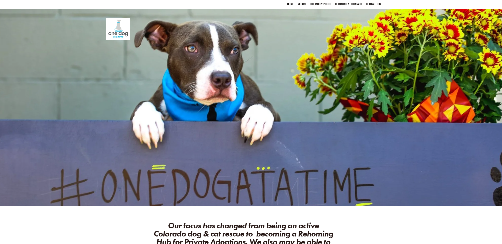
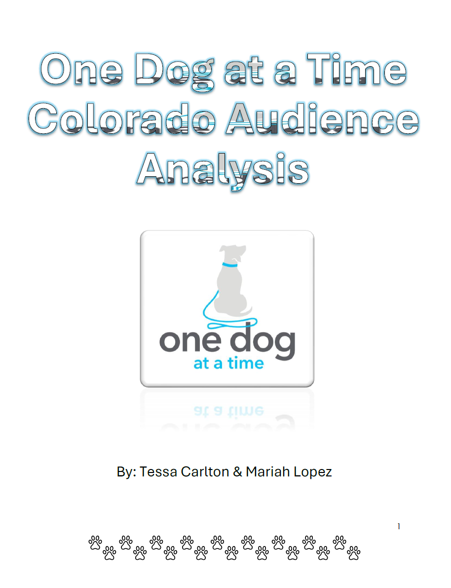
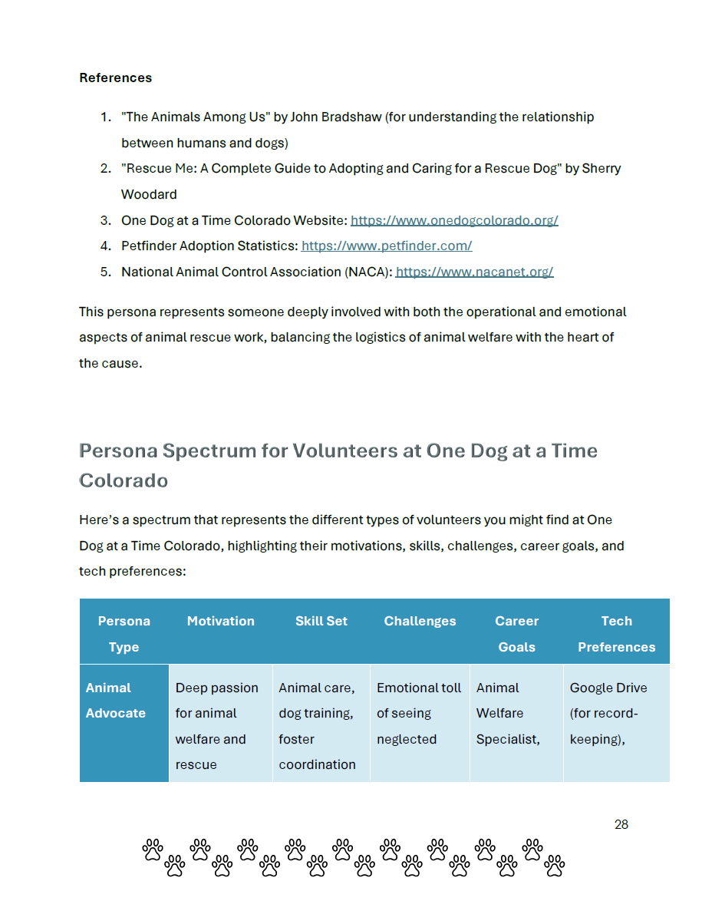

UX Research & Content Strategy
One Dog at a Time Colorado Audience Analysis & Content Strategy
Conducted audience research and developed a content strategy to help a local animal rescue nonprofit better connect with adopters, volunteers, and donors.
Responsibilities
Audience Surveys
Designed audience surveys to understand what adopters, fosters, volunteers, and donors needed before taking action.
Personas & Journey Maps
Developed audience personas and journey maps to identify motivation, friction points, and decision-making needs.
Content Strategy
Created content strategy recommendations to improve adoption, foster, and donation pathways.
Content Audit
Conducted a content audit of nonprofit communications, social media content, and key user pathways.
Information Architecture
Recommended clearer content structure for adoption, foster, and donor information.
Prioritized Roadmap
Organized recommendations into a realistic roadmap using impact, effort, and volunteer capacity as decision factors.

Overview
Helping a local rescue turn interest into action
One Dog at a Time Colorado is a small volunteer-run rescue organization placing dogs from rural shelters into local foster and adoptive homes.
This project used audience research to identify the gaps between what the organization communicated and what their audiences needed to take action.
Service Value
Improving adoption, foster, and donor conversion through clearer content
The value of this project comes from helping a volunteer-run rescue organization understand where interested audiences were getting stuck. The strategy focused on making adoption, foster, and donation pathways easier to understand and easier to complete.
Primary audience journeys: potential adopter, potential foster, and donor.
Prioritized content roadmap created to support realistic implementation.
Content and pathway recommendations focused on clarity, action, and audience trust.

Problem & Goals
Understanding why interested visitors were not completing key actions
Web analytics on adoption nonprofits showed high traffic but low conversion on key actions: adoption applications, foster sign-ups, and donation completions.
The content audit addressed why interested visitors were not completing these actions and what content or structural changes would improve outcomes.
Adoption Clarity
Potential adopters needed a clearer path from viewing available dogs to understanding the adoption process.
Foster Education
Potential fosters needed plain-language explanations, FAQs, and reassurance before committing to a first placement.
Donation Motivation
Donors needed stronger impact stories that connected giving to real outcomes for dogs and foster families.
User Scenario
See a Dog Online
A potential adopter sees a dog through the website or social media and wants to learn more.
Look for the Process
The user tries to understand adoption requirements, timelines, and next steps before applying.
Compare Commitment
A potential foster or adopter evaluates whether the responsibility fits their home, time, and experience level.
Build Trust
The user looks for clear expectations, impact stories, FAQs, and proof that the organization is trustworthy.
Take Action
The user completes an adoption application, foster inquiry, or donation after receiving enough information to feel confident.

My Role
Synthesizing research into realistic nonprofit content improvements
As a researcher and strategist on this project, I synthesized findings into realistic improvements that matched the organization’s volunteer capacity.
The work included research planning, data collection, content auditing, journey mapping, and content strategy recommendations.
Potential Adopter
Dog browser deciding whether to apply
This user wants to understand the adoption process, requirements, timeline, and whether a specific dog is a good fit.
Goals
- Find available dogs quickly
- Understand adoption steps
- Apply with confidence
Potential Foster
Supporter considering a first placement
This user is interested in helping but needs reassurance, expectations, and clear answers before signing up.
Goals
- Understand foster responsibilities
- Know what support is provided
- Feel prepared for a first foster dog
Discovery & Constraints
Designing recommendations that a volunteer-run team could maintain
Research included a content audit of recent adopters, current fosters, and the organization’s social media presence.
The primary constraint was the organization’s all-volunteer capacity, so recommendations needed to be realistic, familiar, and manageable for ongoing engagement.
Volunteer Capacity
Recommendations needed to fit limited time, limited staffing, and existing communication habits.
Action Path Clarity
Visitors needed clearer next steps between interest and action, especially for adoption and foster sign-ups.
Trust Building
Content needed to answer concerns early and show the impact of adoption, fostering, and donations.
Key Features
Audience Personas and Journey Maps
Personas and journey maps helped clarify what adopters, fosters, and donors needed at each decision point before completing an application, inquiry, or gift.
Adoption and Foster Content Recommendations
The strategy recommended surfacing the adoption process earlier, creating a dedicated foster page with a clear FAQ, and making next steps easier to find.
Donation Content Built Around Impact
The donation page was recommended to shift from organization-centered needs to impact stories that show how donations support dogs, fosters, and rescue outcomes.
Information Architecture & User Flows
Clarifying the path from interest to action
Analysis revealed that visitors were arriving primarily to see available dogs, but the path from browsing dogs to understanding the adoption process was unclear.
The recommended IA changes included surfacing the adoption process earlier, creating a dedicated foster page with a clear FAQ, and restructuring the donation page around impact stories rather than organizational needs.
Primary Flows
The strategy mapped the potential adopter journey, potential foster journey, and donor journey, identifying content needs at each step.
Wireframes & Content Recommendations
Presenting user flows as strategy, not final visual design
User flows were created for personas moving from social media posts to the adoption process page and foster information page. These were presented with content recommendations rather than as final designs, keeping the focus on practical strategy and implementation.
Project Link
Audience analysis and content strategy document
The full strategy document includes the audience analysis, content audit findings, journey mapping, information architecture recommendations, and prioritized content roadmap.
Analytics, Iteration, Outcomes & Next Steps
Delivering a prioritized roadmap for volunteer-friendly implementation
Content recommendations were prioritized using an impact and effort matrix, allowing the team to sequence implementation realistically. Each recommendation included a content brief specifying the goal, audience, key messages, and success criteria.
The content strategy was delivered as a prioritized roadmap. Implementation of the social media post strategy was expected to support a measurable increase in foster applications.
Refine social media content to connect dog stories with adoption and foster next steps.
Create a dedicated foster page with clear expectations, support details, and FAQ content.
Restructure donation content around impact stories and recurring giving motivation.
Next Steps
Next steps include implementing the prioritized roadmap, updating adoption and foster content, and testing whether clearer social media pathways increase application completion.
Future iterations would include measuring foster applications, tracking donation page engagement, and continuing to refine content based on audience questions and volunteer capacity.
Learnings
This project strengthened my ability to connect audience research, nonprofit goals, and content strategy into realistic recommendations.
I also learned how important it is to design recommendations around organizational capacity, especially for volunteer-run nonprofits with limited time and resources.